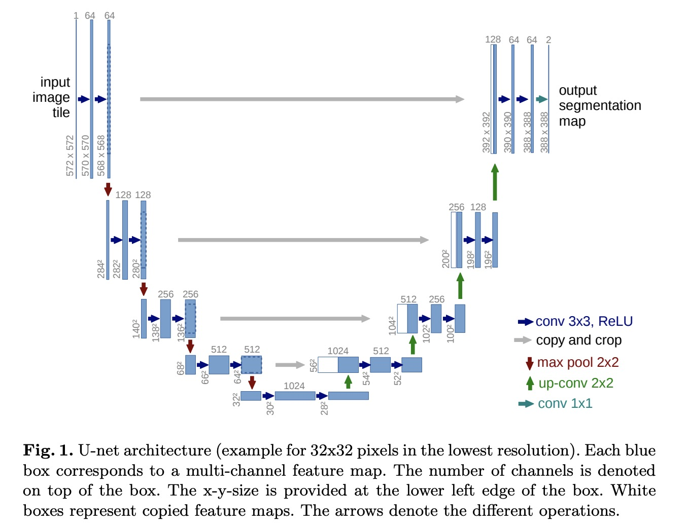

U-Net: Convolutional Networks for Biomedical Image Segmentation
The U-net is convolutional network architecture for fast and precise segmentation of images. And the network architecture of U-net is as below:

Slides Show
Paper: U-net: Convolutional Networks for Biomedical Image Segmentation
U-net implementation and Supplementary materials